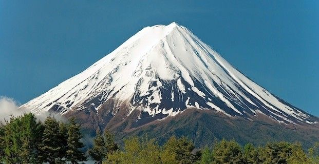
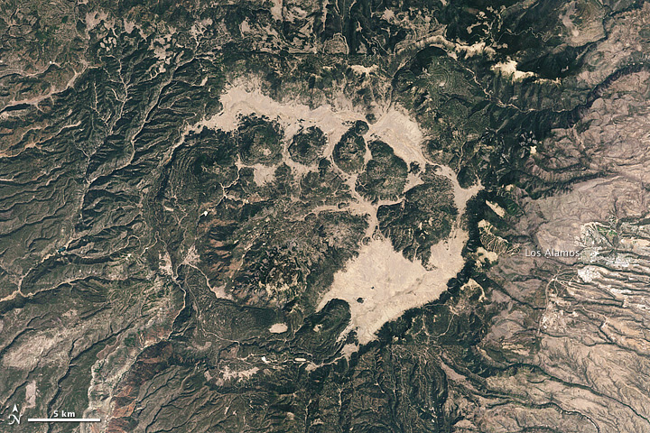
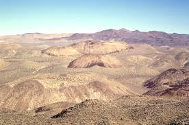
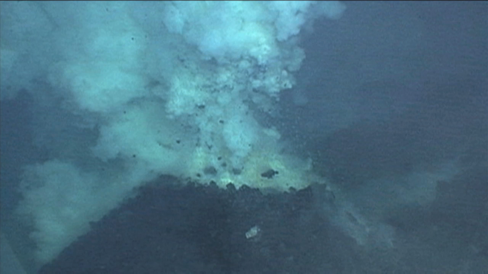
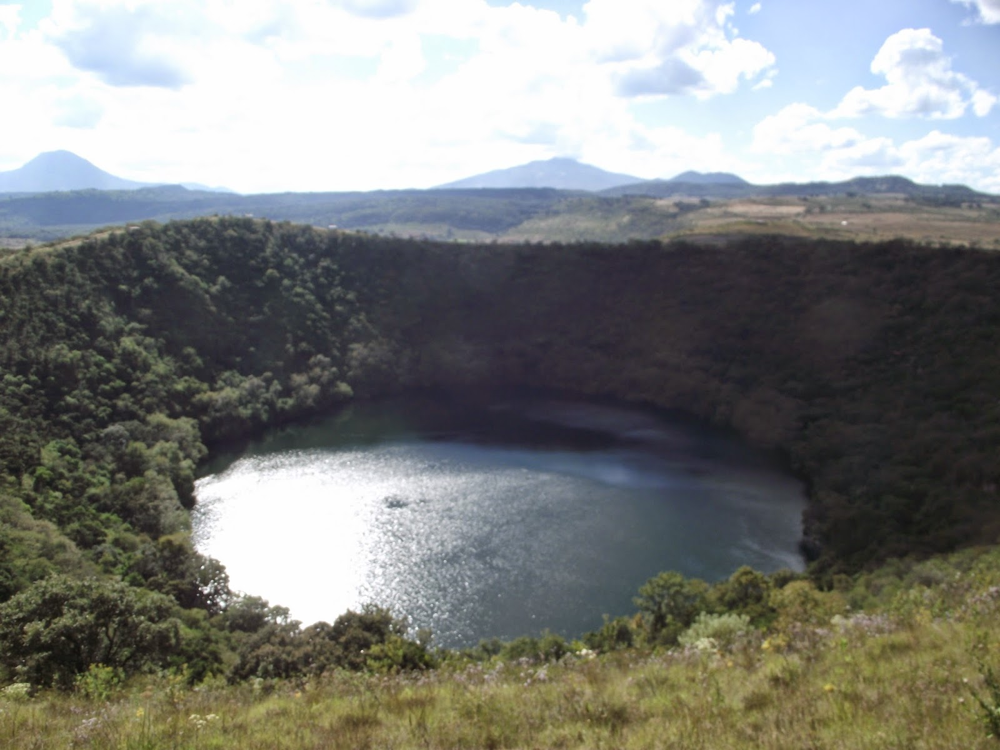
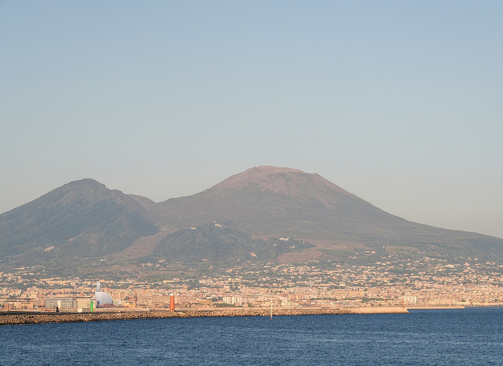
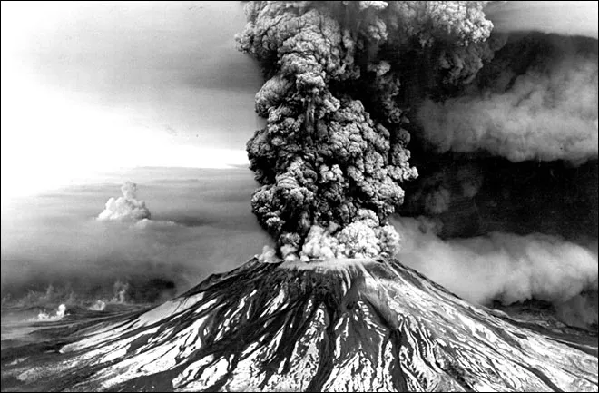
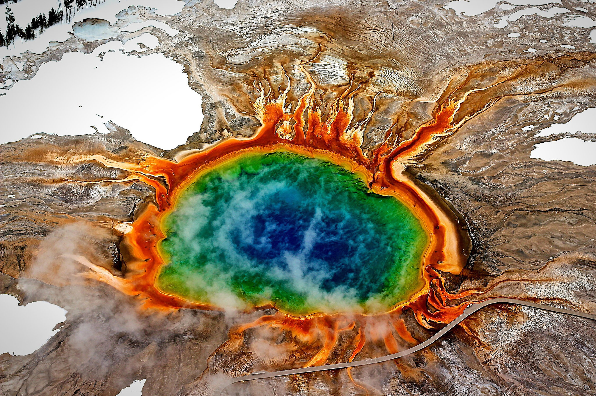

This web maps shows the world volcanoes. It aims to inform about the type and activity level of each one mapped.
It is for anyone interested in volcanoes and where they exist, as well as to inform populations about potential risks.
Volcanoes associated with Shield Volcano: Fissure Vents
Shield volcanoes are characterized by their broad, gently sloping profile, resembling a warrior's shield lying on
the ground. They are primarily built from low-viscosity basaltic lava flows, which travel long distances before
solidifying, creating the wide, shallow slopes whcih give the volcanoes their distinctive shield-like shape. Eruptions from shield volcanoes are generally non-explosive, with
lava flowing steadily from fissures or central vents. Examples include Mauna Loa and Mauna Kea in Hawaii, which
were formed by hotspot activity.
Paricutin, Mexico
Cinder Cone
Volcanoes associated with Cinder Cone: Scoria Cone and Pyroclastic Cone
Cinder cones are the simplest type of volcano, often appearing as steep conical hills with a bowl-shaped crater at the
summit. They are formed from explosive eruptions of gas-rich magma, which shatters into pyroclastic fragments known as
cinders or scoria that accumulate around the vent. These eruptions are typically short-lived but can be violent.
Paricutin in Mexico is a famous example, emerging from a cornfield in 1943 and growing rapidly through successive
eruptions.
Stratovolcano

Mount Fuji, Japan
Volcanoes associated with Stratovolcano: Complex volcano and Compound Volcano
Stratovolcanoes, also known as composite volcanoes, are tall, symmetrical cones built up by alternating layers of
lava flows, volcanic ash, and other volcanic debris. They are formed by both explosive and effusive eruptions,
with viscous lava flows alternating with pyroclastic flows.
Stratovolcanoes have steep slopes which give them a more triangular shaped compared to Shield Volcanoes. Mount Fuji in Japan and Mount St. Helens in the United States are classic
examples of stratovolcanoes.

Valles Caldera, New Mexico
Caldera
Calderas are large, basin-shaped depressions that form when the summit of a volcano collapses into the emptied magma
chamber below during a massive eruption. These eruptions are typically highly explosive, ejecting vast amounts of
volcanic material and leaving behind a large, circular crater. Calderas can be several kilometers in diameter and
may contain smaller volcanic vents or lakes. An example of a caldera would be the Valles Caldera located in northern New Mexico
and measures 22 km wide.

Coso Volcanic Field, California
Volcanic Field
Volcanoes associated with Volcanic Field: Crater Rows
Volcanic fields, also known as volcanic provinces, are areas containing numerous small volcanic centers,
including both cones and fissures, spread across a broad region. They often result from localized volcanic activity
associated with hotspot activity or extensional tectonics. Eruptions within volcanic fields can vary widely in style,
from effusive lava flows to explosive eruptions producing cinder cones or maars (shallow volcanic craters).
The Coso Volcanic Field in California is an example of such a volcanic province.

Hydrothermal Vent
Submarine Volcano
Submarine volcanoes are volcanic vents located underwater, often on the ocean floor. They can form along mid-ocean
ridges, volcanic island chains, or as standalone seamounts. Eruptions at submarine volcanoes can produce pillow
lava formations due to rapid cooling in the cold ocean water. They may also generate hydrothermal vents, which support
unique ecosystems.

Alberca de los Espinos, Mexico (Maar Volcano)
Other
Other Volcano Types: Maar, Lava Domes, Mud Volcano, etc
Other volcanoes not associated with the previous deisgnations
Maar
*Maar info*
Lava Dome
*Lava dome info*
Mud Volcano
*Mud volcano info*
Volcanic Danger
Volcanic eruptions vary widely in frequency, size, and impact. On average, there are around 50 to 60 eruptions globally each year. Most are small and occur in remote areas, causing little damage or loss of life.
The severity of eruptions varies. Some cause minimal damage, while others result in widespread devastation. Factors such as eruption size, proximity to populations, and response measures affect the impact.
Volcanic eruptions typically cause relatively few deaths compared to other natural disasters. However, major eruptions near densely populated areas can have higher death tolls.
Economic damage varies depending on factors like infrastructure damage and disruption to industries. Major eruptions can result in billions of dollars in damage.
Overall, while volcanic eruptions can have serious consequences, their impact on human populations is generally lower than some other natural disasters. Communities near active volcanoes must be prepared with effective monitoring and response systems.
Threat by Location
Areas with a high concentration of volcanoes often coincide with regions of significant tectonic activity, such as the Pacific Ring of Fire.
Countries like Indonesia, the Philippines, Japan, and Chile, located along this belt, host numerous volcanoes.
Understanding the distribution of volcanoes is crucial for comprehensive volcanic hazard assessment and mitigation efforts.
These areas can pose risks to nearby communities through eruptions, gas emissions, and associated hazards like landslides and lahars.
Therefore, monitoring and studying volcanic activity in high-risk regions are essential for effective volcanic hazard management and disaster preparedness.
Threat by Hazard
Volcanic eruptions pose various hazards, each with its associated risks. Ash clouds disrupt air travel and cause respiratory issues as it can build up in a humans lungs like a cement and can cause a victim to suffocate.
Lava flows destroy infrastructure and vegetation. Lahars devastate landscapes and communities downstream. Pyroclastic flows are deadly, caused by ash traveling down the slope of a volcano at high speeds and incenerates everything in its path.
Different eruptions produce distinct hazards. Explosive eruptions (Cinder Cones, Stratovolcano, and Caldera) results in ash clouds and pyroclastic flows. Effusive eruptions (Shield Volcano) primarily pose risks from lava flows.
Understanding these hazards is crucial for assessing volcanic risk and implementing mitigation measures. Hazard maps identify vulnerable areas and inform evacuation plans and emergency preparedness efforts.
The Volcanic Explosivity Index (VEI) categorizes volcanic eruptions based on their size and explosiveness.
It ranges from 0 to 8, with each increment representing a tenfold increase in eruption intensity.
Small eruptions (VEI 0-2) produce minor explosions and limited ash, while larger eruptions (VEI 3-4) generate significant ash plumes and pyroclastic flows.
Very large (VEI 5) and colossal (VEI 6) eruptions can launch ash clouds into the stratosphere and even impact global climate.
Super colossal eruptions (VEI 7) are rare but catastrophic and can cause global temperatures to fall. Mega colossal eruptions (VEI 8) are the largest eruptions ever recorded and their results can be apocalyptic.
VEI 8 eruptions are known as "Super Eruptions," they leave behind massive calders, can blanked much of a continent in ash, and can alter the climate for years.
VEI helps scientists assess volcanic hazards and inform risk management strategies.
Info: One of the msot active volcanoes today, Kilauea erupted for 35 years with several small volcanic vents.
The eruption mainly consisted of lava flows with relatively little explosivity.

Mount Vesuvius today from Naples, Italy
Mount Vesuvius, Italy
Type: Stratovolcano
VEI: 5
Date: 79
Death Toll: ~2,000
Info: Europes most famous eruption,
the Pyroclastic flows caused by the Volcano destroyed the city of Pompeii.
The remains of the city and its inhabitants can be seen today in an ash statue=like appearance
An artists depiction of Krakatoa erupting
Krakatoa, Indonesia
Type: Stratovolcano
VEI: 6
Date: 1883
Death Toll: ~36,000
Info: The eruption was so massive that most of the island the volcano was located on
collapsed into the sea. The most devestating effect was the large tsunamis caused by the collapse of the island
whcih devastated the surrounding areas of Indonesia.

Plume of ash rising out of Mount Siant Helens
Mount Saint Helens, Washington, USA
Type: Stratovolcano
VEI: 5
Date: 1980
Death Toll: 57
Info: Arguably the msot famous eruption in American history.
On May 18, 1980 the northern slope of Mount Saint Helens collapsed,caused a major eruption.
The resulting ash cloud rose 24 kilometers into the Stratosphere.

Grand Prismatic Spring, Yellowstone
Yellowstone National Park, Wyoming, USA
Type: Caldera
VEI: 8
Date: ~640,000 BC
Death Toll: N/A
Info: One of the few Super Eruptions recorded,
the eruption was over a thousand times larger than Mount Saint Helens
and its ash cloud covered much of the modern day Untied States.